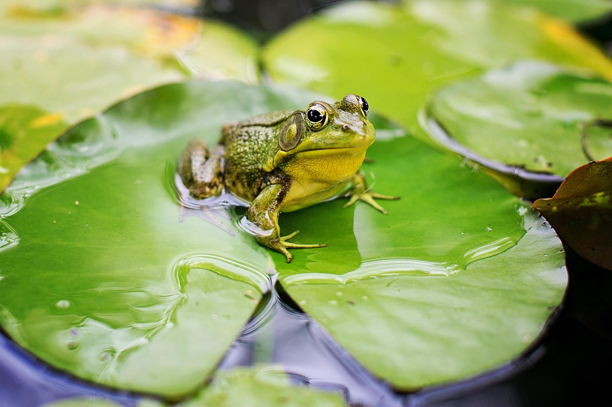

Los loros viven en zonas diversas pueden vivir tanto en selvas amazónicas como en áridos bosques en Australia. Por lo tanto no tienen un hábitad típico aunque prefieren los climas tropicales y subtropicales. Se caracteriza por un patrón de color llamativo y por su capacidad de imitar el habla humana.

Las ranas pueden vivir en una gran variedad de hábitats, desde ríos y arroyos hasta bosques tropicales y zonas subárticas. Son un tipo de anfibios caracterizados principalmente por su gran capacidad de salto gracias a la morfología de sus extremidades posteriores.
